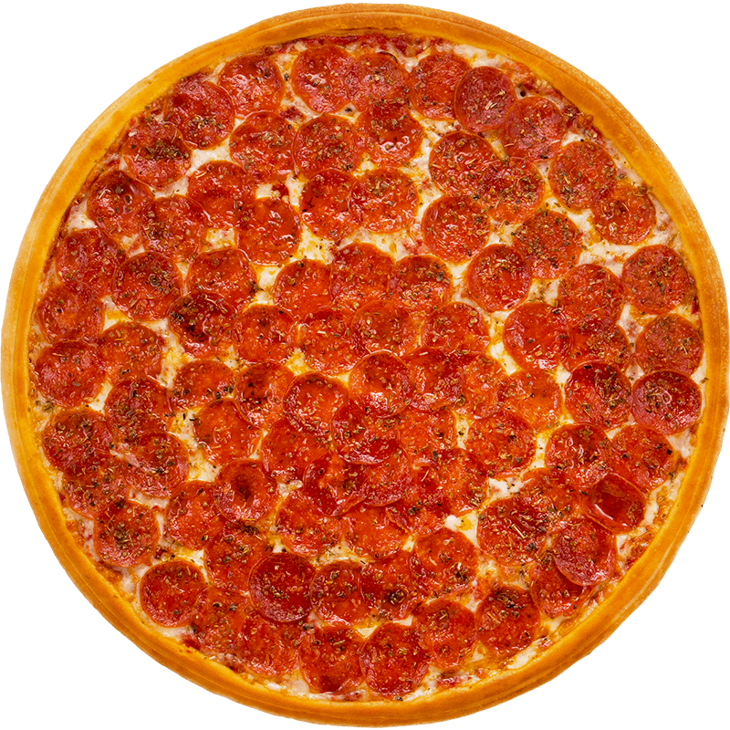

Pizza Pepperoni

La pizza pepperoni es una de las más populares del mundo. Se caracteriza por su masa crujiente, salsa de tomate casera, abundante queso mozzarella derretido y rodajas de pepperoni ligeramente picantes que le dan un sabor intenso y delicioso. Es perfecta para compartir en familia o con amigos.